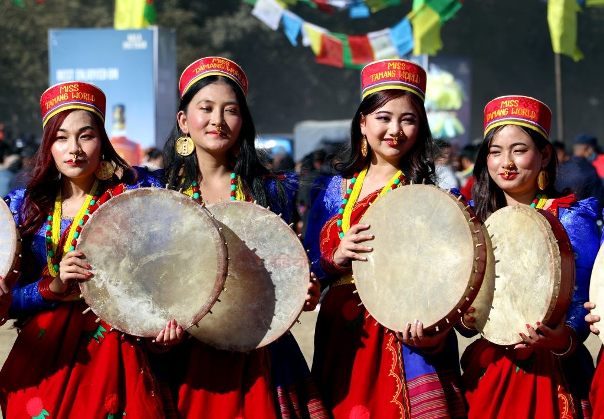
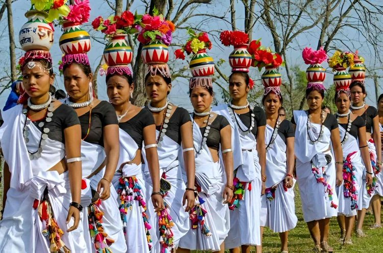
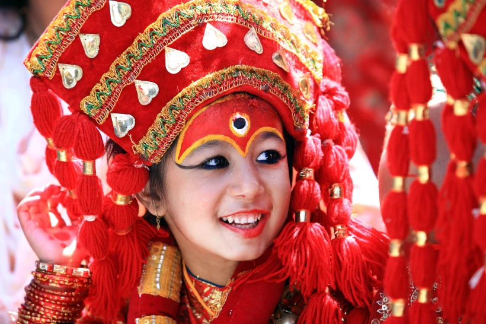
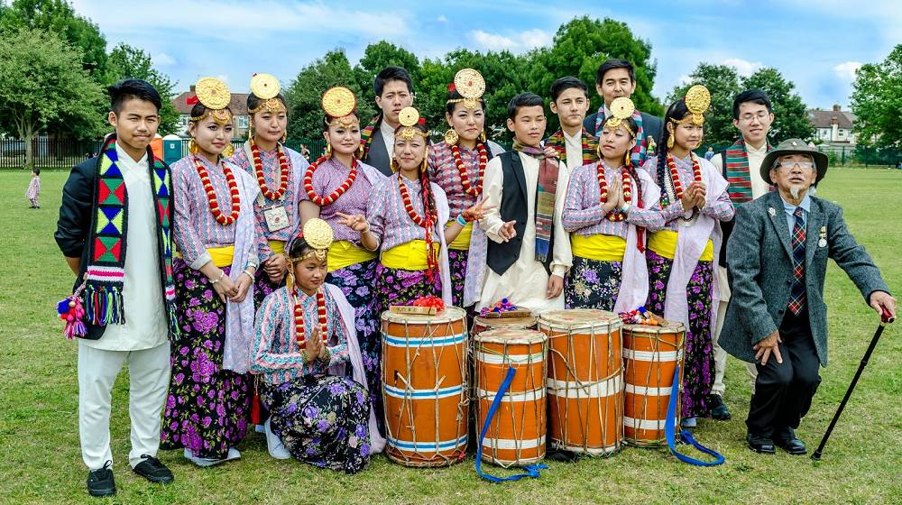

Tamang Culture
The Tamang people are known for their lively music (Tamang Selo), colorful traditional attire, and Buddhist rituals. They are one of the largest indigenous groups in Nepal, with a strong cultural presence in the hilly regions.

Tharu Culture
Tharus are indigenous to the Terai region of Nepal. Their culture is deeply connected with nature, agriculture, and folk traditions. They are well-known for their vibrant dances and unique mud-plastered houses.

Newar Culture
Newars are the original inhabitants of the Kathmandu Valley. Their culture is a rich blend of Hindu and Buddhist traditions, famous for festivals like Indra Jatra, Bisket Jatra, and unique Newari cuisines.

Limbu Culture
The Limbu community from eastern Nepal has a unique culture that includes their traditional drink 'Tongba' and dances performed during festivals. Their Kirati rituals are deeply tied to nature worship.

Magar Culture
The Magar community is spread across western Nepal and is famous for their bravery and service in the Gurkha regiments. They celebrate festivals with traditional dances like 'Kauda Nach' and have a rich folklore tradition.